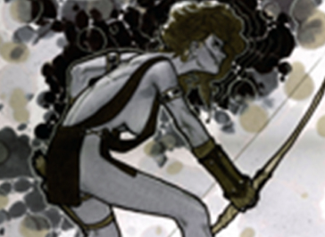
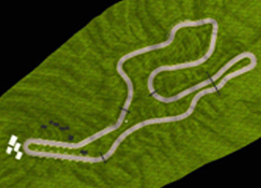

LATEST ARTICLES
A PORTRAIT
Friday November 2030
STS has never been shy of seeking new terrains of investgation. More and more STS scholares are starting to explore and intervene in the art. THis object of study brings new challenges and opportunites that we want to explore in this session. We would like to gather first of all simplu new kinds of knowlesge arising from STS study of the arts.
CONTINUE READINGA PORTRAIT

Friday November 2030
STS has never been shy of seeking new terrains of investigation. More and more STS scholars are starting to explore and intervene in the arts. This object of study brings new challenges and opportunities that we want to explore in this session. We would like to gather first of all simply new kinds of knowledge arising from STS study of the arts.
CONTINUE READINGA PORTRAIT
Friday November 2030
STS has never been shy of seeking new terrains of investgation. More and more STS scholares are starting to explore and intervene in the art. THis object of study brings new challenges and opportunites that we want to explore in this session. We would like to gather first of all simplu new kinds of knowlesge arising from STS study of the arts.
CONTINUE READING